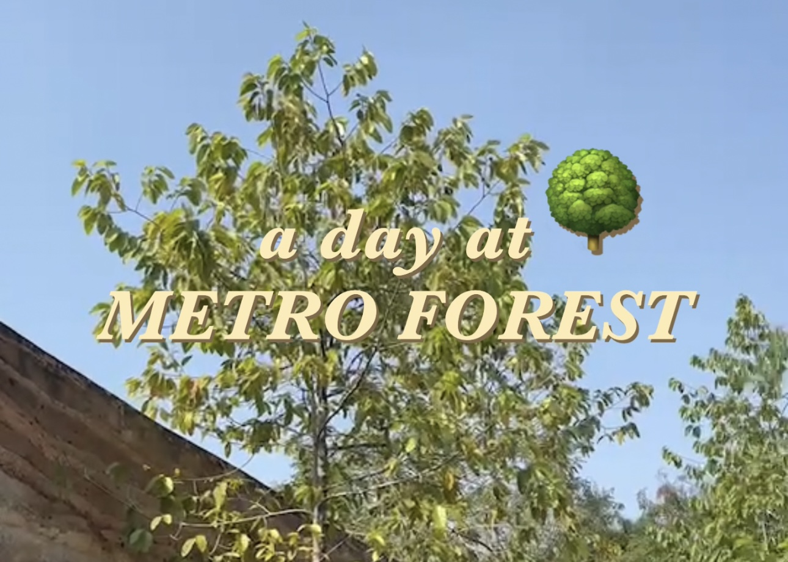

เที่ยววังหลัง ไม่จำเป็นต้องรอวันหลัง
จากพระนคร สู่วังหลัง และวงเวียนใหญ่
ด้วยธุระที่หลีกเลี่ยงไม่ได้ที่ท่าพระจันทร์ เลยคิดเอาไว้ว่าไหน ๆ อินโทรเวิร์ตติดบ้านอย่างเราก็อุตส่าห์มีเรื่องให้ได้ออกบ้านทั้งที ก็ขอถือโอกาสนี้ท่องเที่ยว ช้อปปิ้งเสียด้วยเลยดีกว่า
วันของผมเริ่มจากตะลอนทำธุระที่ท่าพระจันทร์ ล่องเรือข้ามแม่น้ำเจ้าพระยาไปยังฝั่งวังหลัง ตระเวนซื้อเสื้อผ้ามือสองและกินไอศกรีมเลื่องชื่อ ณ ตลาดวังหลัง ไหว้พระเสริมสิริมงคลที่วัดระฆัง แล้วก็ปิดท้ายวันด้วยเฝอหม้อไฟที่วงเวียนใหญ่
นี่แหละ วันที่สายกินจุแบบผมเอนจอยมาก ๆ เลยล่ะ!
